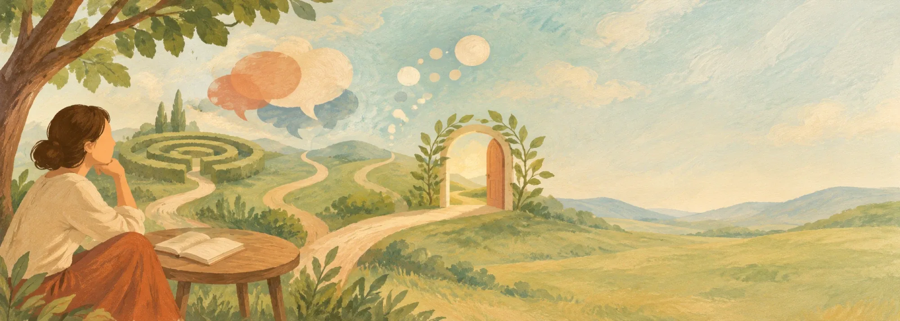

Направления психологии —
тринадцать карт одной психики
За полтора века психология создала много школ, и каждая видит человека по-своему: как сознание под измерением, как поле бессознательных сил, как набор привычек, как систему, обрабатывающую информацию. Здесь они идут в порядке появления — и у каждой мы спрашиваем одно и то же: где в её картине мира место для природы и что она может сказать об экологическом кризисе.
Психология,
которая долго смотрела внутрь
Психология стала отдельной наукой, когда в 1879 году Вильгельм Вундт открыл в Лейпциге лабораторию, где душевную жизнь начали измерять. С тех пор её предметом почти всегда был отдельный человек: его ощущения, влечения, привычки, мысли. Среда в классических теориях присутствовала, но как фон, как источник стимулов или как «другие люди». Лес, река, климат, город как физическое место в эти карты почти не попадали.
Это не значит, что школам нечего сказать об экологии. Наоборот: почти каждая открыла механизм, без которого нельзя понять, почему люди разрушают среду, в которой живут, и почему так трудно остановиться. Защиты психики объясняют отрицание. Бихевиоризм — силу удобных привычек. Социальная психология — власть норм. Когнитивная — то, как далёкое кажется неважным. А несколько направлений — от теории поля Левина до экологического восприятия Гибсона — прямо вывели психологию из головы человека в мир вокруг него.
Ниже — тринадцать направлений в порядке их появления. Это не учебник и не полный перечень: для подробной карты школ есть обзор «Основы психологии», а для хронологии — «История психологии: двенадцать вех». Здесь у каждого направления один и тот же вопрос: что оно знает о нас как о существах, живущих на планете. Темы самой экопсихологии собраны во втором подразделе — «Экопсихология».
Психофизика и экспериментальная психология —
душа под измерением
Научная психология началась с дерзкой идеи: ощущения можно измерять. Густав Фехнер показал, что между силой раздражителя и силой ощущения есть закономерность — чтобы звук казался вдвое громче, его физическая мощность должна вырасти гораздо больше чем вдвое. Вильгельм Вундт построил на этом целую программу: лабораторию, где испытуемые в строго заданных условиях описывали свои ощущения, а экспериментатор засекал время реакций.
Мало кто помнит, что тот же Фехнер в 1848 году опубликовал книгу «Нанна, или О душевной жизни растений», где всерьёз рассуждал о том, что растения могут что-то чувствовать. Наука о психике, таким образом, родилась у человека, который не проводил жёсткой границы между внутренним миром людей и жизнью остальной природы. Его последователи эту границу провели — и надолго.
Для экологии от психофизики осталось главное наследство — метод. Сегодня тот же подход измеряет, как шум города повышает давление, как освещённость влияет на сон и как вид на деревья меняет пульс. Без привычки измерять субъективное у нас не было бы ни исследований восстановительного эффекта природы, ни данных о том, как жара влияет на внимание и настроение.
→ Как это измеряют сегодня — в эссе «Утренний свет: десять минут» и «Жара и здоровье».
Функционализм Уильяма Джеймса —
сознание как поток
Уильям Джеймс спрашивал не «из чего состоит сознание», как Вундт, а «зачем оно нужно». Сознание, по Джеймсу, — не набор элементов, а непрерывный поток, который помогает живому существу приспосабливаться к среде. Под влиянием Дарвина функционалисты рассматривали психику как орган выживания: мышление, привычки и эмоции существуют потому, что помогают действовать в мире.
Самое важное для нашей темы различение Джеймса — два вида внимания. Произвольное требует усилия: мы заставляем себя сосредоточиться на скучной таблице. Непроизвольное захватывает само: огонь в камине, бегущая вода, листва под ветром. Почти через сто лет Рейчел и Стефан Каплан построят на этом различении теорию восстановления внимания: природная среда отдыхает усталое произвольное внимание, потому что занимает непроизвольное.
Функционализм оставил и общий урок: психика — не замкнутая коробка, а способ быть в среде. Если среда резко меняется, привычные способы приспособления перестают работать — и это переживается как тревога и растерянность задолго до того, как мы находим для них слова.
→ Продолжение этой линии — тема «Восстановление внимания» в подразделе «Экопсихология».
Психоанализ —
то, что мы не хотим знать
Фрейд перенёс центр психики из сознания в бессознательное: большая часть наших мотивов скрыта от нас самих, а сознание охраняют защитные механизмы. Анна Фрейд систематизировала эти защиты: вытеснение, отрицание, рационализацию, проекцию. Научный статус многих идей психоанализа спорен — их трудно проверить экспериментом, — но описание защит оказалось одним из самых живучих его вкладов.
Экологический кризис — почти идеальный объект для защит. Угроза огромна, тревожна и требует неудобных перемен — и психика отвечает знакомыми ходами: «учёные преувеличивают» (отрицание), «от меня ничего не зависит» (рационализация), «виноваты другие страны» (проекция). Британский психоаналитик Салли Вайнтроуб описала это как «культуру безразличия», которая позволяет знать о проблеме и не чувствовать её.
Был в психоанализе и голос, прямо заговоривший о природе. Американский аналитик Гарольд Сирлз в 1960 году выпустил книгу о «нечеловеческой среде» — деревьях, животных, ландшафте, вещах — как о полноценной части эмоционального развития. Тогда её почти не заметили; полвека спустя её цитируют как одну из предтеч экопсихологии.
→ Как защиты мешают действовать — в блоке «Почему мы знаем — и не делаем» на странице раздела и в обзоре «Основы психологии».
Аналитическая психология —
коллективное бессознательное
Юнг разошёлся с Фрейдом, расширив бессознательное за пределы личного опыта. Под личными воспоминаниями, по Юнгу, лежит коллективное бессознательное — общие для всех людей образы-архетипы, которые проступают в мифах, сказках и снах. Как научная гипотеза эта идея почти не проверяема, но как язык для разговора о символах она оказалась очень влиятельной — от психотерапии до литературы.
Юнг много писал о цене, которую современный человек платит за рационализм: он видел в нём потерю «мистического соучастия» — переживания связи с природой, которое было естественным для традиционных культур. Человек, говорил он, перестал чувствовать себя частью мира и остался с изолированным сознанием. Экопсихологи 1990-х охотно подхватили эту мысль, иногда превращая её в романтическую идеализацию прошлого.
Полезное и проверяемое зерно юнгианской линии — внимание к образам и символам. Как люди говорят о природе, какие истории о будущем им доступны — от апокалипсиса до «всё образуется», — сильно влияет на то, способны ли они действовать. Об этом сегодня пишут исследователи климатической коммуникации, вовсе не опираясь на Юнга.
→ Что от Юнга осталось в науке — в обзоре «Основы психологии».
Бихевиоризм —
поведение и его последствия
Бихевиористы предложили забыть о недоступном «внутреннем мире» и изучать только наблюдаемое: как поведение зависит от стимулов и последствий. Скиннер показал, что действие закрепляется, если за ним следует награда, и угасает, если награды нет. Многие выводы бихевиоризма о человеке оказались слишком упрощёнными, но механизм подкрепления работает и сегодня — в школе, в приложениях, в нашем быту.
Для экологии это, пожалуй, самое практичное наследство. Привычки держатся на немедленных удобствах, а выгоды бережного поведения далеки и невидимы. Поэтому экологичное поведение выигрывает, когда его делают удобным, видимым и вознаграждаемым: контейнер для раздельного сбора у двери, а не в километре, счётчик расхода воды перед глазами, залог за бутылку.
Сам Скиннер в последние годы жизни написал эссе «Почему мы не действуем, чтобы спасти мир» (1987). Его ответ был бихевиористским: угроза отдалена во времени, а подкрепление за вредное поведение — немедленно. Сорок лет спустя этот диагноз всё ещё точен, хотя мы лучше знаем, как сократить разрыв: обратная связь здесь и сейчас и изменение среды, в которой принимаются решения.
→ Как это выглядит в быту — «Экономия воды» и «Компост в квартире».
Гештальт и теория поля —
поведение в ситуации
Гештальт-психологи показали, что восприятие не складывается из отдельных ощущений: мы сразу видим целое — мелодию, а не набор нот, лицо, а не набор пятен. Курт Левин перенёс этот принцип на поведение. Его формула «поведение есть функция личности и среды» звучит просто, но для своего времени была революцией: человека нельзя понять отдельно от «психологического поля», в котором он действует.
Ученик Левина Роджер Баркер сделал следующий шаг — буквально вышел из лаборатории. С 1947 года он с коллегами годами наблюдал жизнь маленького городка в Канзасе и обнаружил, что поведение людей лучше предсказывается местом, чем характером: в аптеке, на уроке, в церкви, на баскетбольном матче люди ведут себя по-разному, а в одном месте разные люди — похоже. Баркер назвал свой подход экологической психологией — задолго до того, как слово «экология» стало означать заботу о природе.
Отсюда вывод, важный для любых экологических перемен: менять «ситуации» часто эффективнее, чем уговаривать людей. Улица, удобная для пешехода, двор с общим огородом, столовая, где растительное блюдо стоит первым, меняют поведение тысяч людей без единой лекции.
→ Город как «поведенческая ситуация» — в лаборатории «День в 15-минутном городе» и эссе «Город, который пьёт дождь».
Психология развития —
как ребёнок встраивается в мир
Жан Пиаже показал, что ребёнок не маленький взрослый: его мышление проходит стадии и строится в активном исследовании мира руками. Лев Выготский добавил, что развитие идёт через общение: то, что ребёнок сегодня делает вместе со взрослым, завтра он сделает сам — это «зона ближайшего развития». Альберт Бандура описал научение через наблюдение и самоэффективность — веру в то, что твои действия что-то меняют.
Ури Бронфенбреннер в 1979 году собрал эти линии в экологическую модель развития: ребёнок растёт внутри вложенных систем — семья, школа, район, культура, эпоха. Он говорил не о природе, а о социальной среде, но сама картина «вложенных миров» оказалась удобной и для разговора о природной среде, в которой растёт ребёнок.
Для экологии выводы прямые. Чувство связи с природой — один из самых надёжных предикторов бережного поведения во взрослом возрасте — растёт из детского опыта: лазить по деревьям, копать, наблюдать. Лучше всего учит не лекция, а совместное дело с теми, кто уже умеет. А самоэффективность — главное противоядие от экологической беспомощности, в том числе у детей.
→ Подробнее — «Школа под открытым небом», «Экологическая тропа у школы» и «Экологическая тревога у детей».
Гуманистическая психология —
человек, который растёт
Гуманистические психологи возражали и психоанализу, и бихевиоризму: человек — не только пучок влечений и не только набор реакций, а существо, которое стремится к росту и смыслу. Маслоу описал самоактуализацию и «пиковые переживания» — моменты полноты и единства с миром. Роджерс сделал центром терапии безусловное принятие и доверие к способности человека меняться.
Многие пиковые переживания, которые собирал Маслоу, происходили в природе: у моря, в горах, под звёздным небом. Трансперсональное крыло гуманистической психологии пошло дальше и заговорило о «расширенном Я», которое включает не только близких людей, но и живой мир. Философ Арне Несс, основатель глубинной экологии, назвал это «экологическим Я», а Уорвик Фокс в 1990 году — «трансперсональной экологией».
Научная проверка этих идей шла трудно, и в них много вдохновения и мало измерений. Но одна гипотеза получила солидную поддержку позже: люди, которые включают природу в образ себя, действительно бережнее к ней относятся. А исследования благоговения нашли в «пиковых переживаниях» Маслоу измеримое ядро.
→ Как растёт круг заботы — в эссе «Эволюция сознания»; о благоговении — в подразделе «Экопсихология».
Когнитивная психология —
как мы думаем и где ошибаемся
Когнитивная революция вернула в психологию то, что бихевиористы из неё изгнали: мышление, память, внимание. Психику стали описывать как систему, которая обрабатывает информацию — с ограниченной ёмкостью и множеством коротких путей. Канеман и Тверски показали, что эти короткие пути — эвристики — экономят силы, но систематически ведут к ошибкам.
Для климата эти ошибки почти идеально неудачны. Мы переоцениваем близкое и недооцениваем далёкое во времени и пространстве — исследователи называют это психологической дистанцией. «Резервуар тревоги» ограничен: если волнует экономика, климат отходит на второй план. Огромные числа пострадавших вызывают меньше сочувствия, чем одна история, — Пол Словик назвал это психическим онемением. А сдвиг базовой линии заставляет каждое поколение считать нормой уже обеднённую природу.
Хорошая новость когнитивной психологии в том, что искажения предсказуемы — значит, их можно учитывать. Конкретные местные примеры вместо глобальных средних, выбор «по умолчанию» в пользу бережного варианта, видимые последствия здесь и сейчас работают лучше, чем ещё один тревожный график.
→ Подробнее — понятия «Сдвиг базовой линии» и «Гиперобъект», тема «Психологическая дистанция» в подразделе «Экопсихология».
Экологическая психология восприятия —
мир как набор возможностей
Джеймс Гибсон предложил смотреть на восприятие не как на обработку картинки в голове, а как на активное взаимодействие животного со средой. Его ключевое понятие — аффорданс: то, что среда «предлагает» существу. Ветка предлагает птице сесть, ступенька — шагнуть, вода — пить или плыть. Аффорданс не находится ни в среде, ни в наблюдателе отдельно — он возникает в их отношении.
Подход Гибсона долго оставался на периферии, но сегодня его идеи стоят за «воплощённым» и «расширенным» пониманием мышления: разум работает не только в мозге, но в связке «тело — инструменты — среда». Даже основатель когнитивной психологии Ульрик Найссер в 1976 году развернулся в сторону Гибсона и призвал изучать восприятие в реальной жизни, а не только в лаборатории.
Для экологии у аффордансов есть простой практический смысл. Среда, которая предлагает ходить пешком, сидеть в тени, видеть воду и растения, меняет поведение сама. А обеднённая среда — асфальт, парковки, глухие фасады — сужает репертуар того, что человек вообще способен заметить и захотеть.
→ Разум, выходящий за пределы головы, — в лаборатории «Бейтсон против ChatGPT».
Клиническая психология и КПТ —
терапия мыслей
Когнитивно-поведенческая терапия исходит из того, что нас ранят не столько события, сколько то, как мы их истолковываем. Бек и Эллис научили пациентов замечать автоматические мысли — «всё пропало», «я ничего не могу» — проверять их на реальность и заменять более точными. КПТ стала одним из самых изученных и эффективных методов психотерапии при тревоге и депрессии.
С экологической тревогой классическая КПТ сталкивается с неожиданной проблемой: многие тревожные мысли о климате не искажены, а верны. Поэтому клиницисты, работающие с этой темой, сместили фокус. Задача не в том, чтобы убедить человека, что всё в порядке, а в том, чтобы отделить реалистичное беспокойство от катастрофизации («всё бессмысленно»), вернуть ощущение влияния и перевести чувства в посильное действие.
Клиническая психология осторожна с новыми ярлыками: экотревога не считается болезнью и не входит в классификации расстройств. Но там, где тревога начинает мешать спать, работать и жить, помощь специалиста нужна — и хорошая новость в том, что подходы для этого уже есть.
→ Подробнее — «Климатическая тревога — болезнь или здравомыслие?» и тема «Экотревога» в подразделе «Экопсихология».
Психология среды —
человек и место
Психология среды — направление, которое изучает связь человека с физическим окружением: домом, улицей, городом, ландшафтом. Её основатели в 1960-х изучали, как планировка больничных палат влияет на поведение пациентов, почему одни места кажутся уютными, а другие враждебными, как теснота и шум влияют на самочувствие. Отсюда вышли исследования вида из окна, восстанавливающих сред и привязанности к месту.
С 1990-х это направление всё больше занимается вопросом, который поставил экологический кризис: как люди влияют на среду, а не только среда на людей. Так сложилась «психология охраны природы» — исследования того, как поддерживать бережное поведение и чувство ответственности за природу. Канадский психолог Роберт Гиффорд в 2011 году собрал около трёх десятков психологических барьеров на пути к действию и назвал их «драконами бездействия».
Психология среды — мост между классическими школами и экопсихологией. От первых она унаследовала метод и осторожность, от второй — главный вопрос. Почти все темы второго подраздела — от восстановления внимания до норм и экологического горя — выросли из её лабораторий и полевых исследований.
→ Продолжение — подраздел «Экопсихология».
Психология выходит
из головы в мир
Если прочитать эти тринадцать направлений подряд, видна общая линия. Психология начиналась внутри человека — с ощущений, влечений, мыслей. Потом обнаружила других людей: группу, нормы, авторитет. Потом — ситуацию и место: поле Левина, поведенческие ситуации Баркера, аффордансы Гибсона, психологию среды. Каждый шаг расширял предмет: психика оказывалась не замкнутой коробкой, а способом жить среди других и в мире.
При этом ни одна школа не «устарела» полностью. Защиты из психоанализа объясняют отрицание, подкрепление из бихевиоризма — привычки, эвристики из когнитивной психологии — то, почему далёкое кажется неважным, а КПТ помогает с тревогой. Экологический кризис требует их все сразу — как разных карт одной местности.
После этих тринадцати появились новые направления — нейронауки, позитивная психология, исследования благополучия — и психология пережила кризис воспроизводимости, который сделал её строже. Куда эта линия ведёт дальше — во втором подразделе, «Экопсихология»: тринадцать тем о том, что природа делает с психикой и что психика делает с природой.
Психика — не то, что внутри нас, а то, как мы живём в мире.
Социальная психология —
сила других людей
Социальная психология изучает, как присутствие и мнения других людей меняют наши мысли и поступки. В экспериментах Аша люди соглашались с явно неверным ответом группы. В опытах Милгрэма многие продолжали выполнять жестокие указания экспериментатора. Дарли и Латане показали эффект свидетеля: чем больше людей видят беду, тем меньше шансов, что кто-то поможет, — ответственность размывается.
Экологический кризис устроен как гигантский эффект свидетеля: его видят все, и потому кажется, что действовать должен кто-то другой. Зато сила норм работает и в обратную сторону. В известных экспериментах Роберта Чалдини люди меньше мусорили, когда видели чистое место, и чаще повторно использовали полотенца в отеле, когда им сообщали, что так делает большинство гостей. Сравнение своего счёта за энергию с соседским снижает потребление на несколько процентов в миллионах домов.
Самый трудный урок социальной психологии — идентичность. Если признание проблемы означает пойти против взглядов «своих», человек скорее отвергнет факты, чем рискнёт принадлежностью к группе. Поэтому о климате лучше всего говорят те, кому доверяет конкретная аудитория, а не «чужие» эксперты.
→ Соседняя наука об обществе — «Основы социологии»; почему вместе проще — «Никто не спасает планету в одиночку».